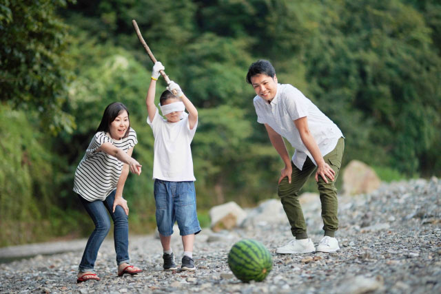

引き揚げ船の中で死んだ娘
中山 富美さん（市民、女性）
１９４５年（昭和２０年）８月、私たち夫婦と娘２人（４歳、生後５か月）は、北京から南西約７００キロの山西省運城（うんじょう）という町におりました。戦局が危うくなったので婦女子は集団で内地に引き揚げることになり、私は娘２人と、オムツだけを持って運城から列車に乗りました。
（１９４５年）３月３０日一応終業式、４月から３年生になった。学校にいればかわいい１年生が入って来る頃だ。３０日いつもの通り旋盤で、作業をしていると、いきなりトタン屋根がバリバリとすごい音がした。慌てて外へ出てみると、すぐ近くの三菱重工の工場から、もうもうと黒い煙が天高く上がっていた。空襲だった。たちまち空襲警報が出て、待避命令が出た。急いでロッカーから防空頭巾を出してかぶり、工場の外にある浜松神社の境内の防空壕（ごう）目指して、いちもくさんに走った。その間にも、上の方からヒュウーッ、ヒュウーッと空気を裂いて爆弾が落ちてくる音がして、その爆弾と競走するように、壕と壕との間のくぼ地に頭から、突っ込んだ。その途端近くに落下して、大きな音と地響きと砂ぼこりがもうもうと、あたりに立ちこめた。落下の合間を見て、あらためて防空壕の中に入った。厚さ４センチほどの木の板で出来ている箱を半地下に埋めてあり、上を土で覆ってあった。高さ１．２メートル、幅１．５メートル、奥行き５メートルぐらいの大きさで入り口に厚い板を置いてあった。ほどなく再び、敵機の爆音が近づいてきたと思うまもなく、またヒュールルーッ、ヒュールルーッと落下音が聞こえてきた。壕の中で聞くと皆、至近弾に感じる。いよいよやられた、今度は駄目かと皆観念して、両手の指で、耳、目、鼻を押さえ、突っ伏していた。ドカン、ドカンと音と、壕がひっくり返るように揺れて、目を開けると厚い木の蓋が爆風でずれて、さしこんだ光で見ると、壕の中も、もうもうと土ぼこりでいっぱいだった。体中緊張で汗ぐっしょりだったが、とりあえず今回はまだ命があったと思った。空襲は波状攻撃で第１波、第２波というふうに１０波ぐらいやって来た。その度に「もう駄目か」「今度こそ最期か」との恐怖と緊張の連続で、終わって警報が解除になるころには、もう全員へとへとだった。
～中略～
顔も洗えず、体もふけず、そのうちに貨車の中は酸っぱいような何とも言えない異様な臭いがプンプンしてきました。においに慣れると子どものシラミ取りが楽しい日課になりました。体にはシラミがいっぱいたかって、私たちと共存しているのだなあと思い、黙々と子どものシラミを取ってあげます。この集団は半数以上が子どもで、何かの病気で下痢をして死ぬ子が多くなりました。襲撃のない夜、駅に貨車が止まると、親たちが泣きながら穴を掘って埋葬しました。
すでに、食糧事情も切迫していて、主食にジャガイモが混ざるのは、いい方で、大豆の絞りかすや、ハトの餌だったコーリャンをだんごにしたものなどの間に米粒が僅か入っていて、ホンの２口か３口ぐらいの量しか無かった。色も見たところ、紫がかったピンクで、粘っこくてうまいものではなかった。町中では、それすら無くて芋の葉や茎まで食べたところもあるという。
～中略～
３か月ほど無蓋車に揺られ天津に着き、収容所へ入りました。収容所は大きな倉庫で、床は硬いセメント。それでも毛布を敷いて子どもの手足を精いっぱい伸ばして寝かせてやることができ、天国だと思いました。収容所生活が１か月か２か月位続き、娘２人は風邪がもとで３９度の熱が続き、苦しむようになりました。私は一人ずつ、手と体で抱き包んで一緒に泣いて暖めてやるしかできませんでした。天井の大きな高窓から吹雪が吹き込んできて、娘たちの顔にかかります。新聞紙を拾って来て掛けてあげると、少しは手足が暖かくなりました。
堀江 哲郎さん・壮一郎さん（兄の壮一郎さんの体験談を哲郎さんが寄せた）
狭い船の中で、私と長女は喉の乾きを我慢しながら、周りに聞こえないように小さい声で話をして励まし合いました。 娘「内地ってどんなところ？」 私「山があって、川があって、きれいな水がどんどん流れているのよ」 娘「じゃ、水に入って遊べるねえ」 娘「おばあちゃんってどんな人？」 私「とてもやさしいよ。おいしい物をたくさん作ってくれるよ」 娘「抱っこしてくれるかなあ」 長女は４歳の子どもながら、不安の中にも夢をふくらませているようでした。 船内では１日１回、一つの水筒と４人分の水と、ほんの少しの外米を蒸したものが支給されました。子どもは日に日に衰弱してゆくのが分かりました。外米は生米なので、子どもは全然食べられず、水ばかり欲しがります。長女は栄養失調で骨と皮が目立つようになり、つぶらな目は鋭く、お腹は大きく膨らんでいました。飲み水は午前中でなくなり、枕元を通る人たちにかすれ声で、「おじちゃん、お水……」、「おばちゃん、お水ちょうだい」と足にすがるようにおねだりしました。でも誰からも一滴ももらえませんでした。 乗船５日目、佐世保が遠く見えてきました。しかし長女は声も出なくなり、冷たくなって息をしなくなりました。４歳５か月でした。周囲の人に死んだことが分かると海に投げられてしまいます。 「なきがらは何としても一緒に連れて帰るんだ」と思い、涙が止まらないのを我慢して平静を装い、気付かれないように注意しました。夜になると次女をおなかの上に寝かせ、死んだ長女の頭と肩を抱いて、思いっきり泣いて謝りました。
～後略～
https://www2.nhk.or.jp/archives/
shogenarchives/kioku/detail.cgi?das_id=D0001800087_00000
最終閲覧日 8月8日